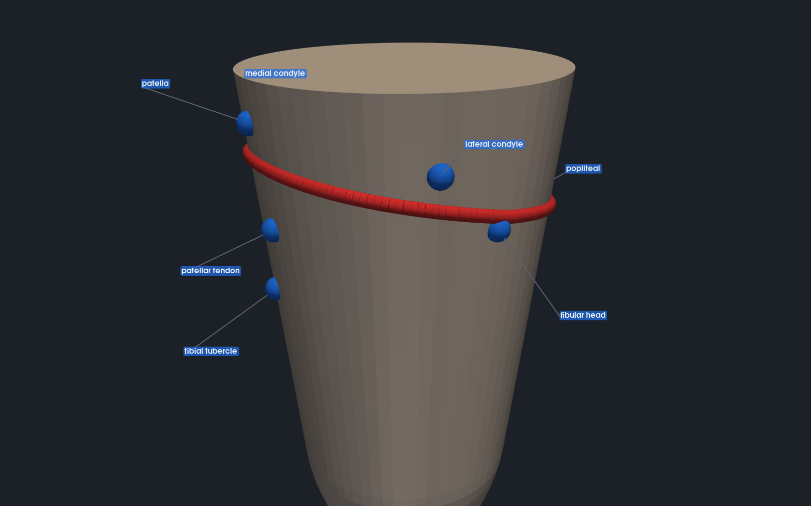

Open-source socket fitting
AI-Assisted Fitting CAD Plugin
Software that automates the trim line, the rim curve a prosthetist draws by hand on every transtibial socket.
Load a limb scan, mark the anatomical landmarks you already look for, and the software proposes the rim curve. The fitting core is free and open source.

How it works
Four steps, from scan to a curve you can cut to
-
Import the scan
Open a limb scan from your scanner in a standard mesh format. The software works out the limb's long axis and puts every case in the same orientation, so nothing depends on how the scan happened to be captured.
-
Mark the landmarks
Click about seven anatomical points: patellar tendon, tibial tubercle, fibular head, the condyles, the popliteal. Each click snaps onto the surface, and the set is saved next to the scan so a case can be reopened exactly as you left it.
-
Generate the trim curve
A rule engine draws the rim from those landmarks: relief at the front over the patellar tendon, a higher wall at the back over the popliteal, and smooth transitions through the medial and lateral walls. The curve is checked for a closed loop that sits on the surface without crossing itself.
-
Export to your workflow
Write the curve out as STEP for CAD/CAM, or take the model out as STL for 3D printing. It hands off to the carving, milling and printing tools your lab already runs.
Why open source
Free to adopt, and open to inspection
The fitting core is released under the Apache 2.0 licence. There is nothing to buy to try it, and nothing stopping a clinic, a fabricator or a researcher from using and adapting it, including commercially.
It is built to fit an existing workflow, not replace one. Standard mesh formats in, standard CAD/CAM formats out. It sits between the scanner you already own and the software you already use, and it automates one repetitive step rather than asking you to move your practice onto a new platform.
Open source also means the clinical logic is readable, not a black box. The trim-line rules are explicit, adjustable parameters. If you disagree with what the software does, you can see exactly what it did and change it.
Where the project stands
Working pipeline, uncalibrated rules
- The pipeline runs end to end today on synthetic demo geometry: import, orientation, landmark placement, trim-curve generation, 3D view, and export. The image above is real output, not a mock-up.
- The clinical parameters are placeholders. The values that control how far the rim drops at the front and rises at the back are starting points, not settled clinical practice.
- It has not been validated on patient scans, and it is not a medical device or a substitute for clinical judgement.
About
Who is building this
I am Arthur Gouaze. I am building this under the iStem venture program, starting from a simple observation: the trim line is drawn by hand on every transtibial socket, it takes real time, and it is one of the parts of the process a computer can genuinely help with.
If you fit or fabricate transtibial sockets, I would like to hear how you draw the trim line and what would have to be true for software to be worth your time. I am equally glad to hear that this is the wrong problem to solve.